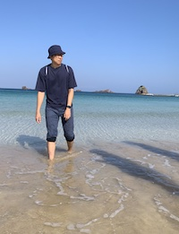
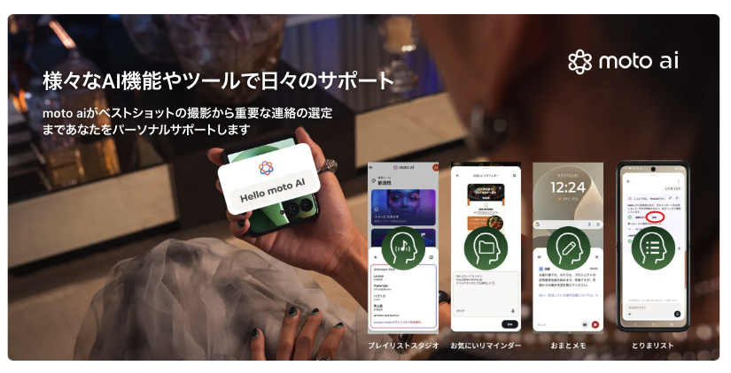
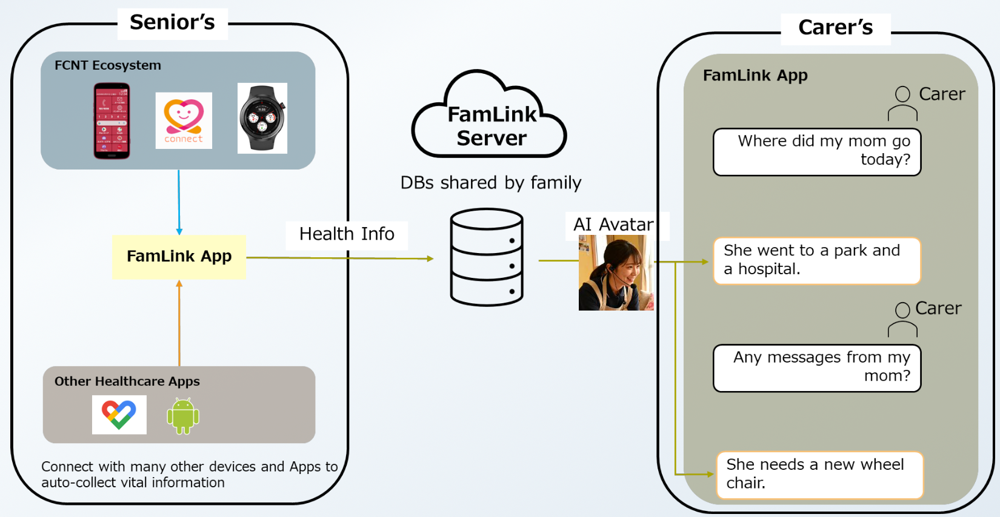
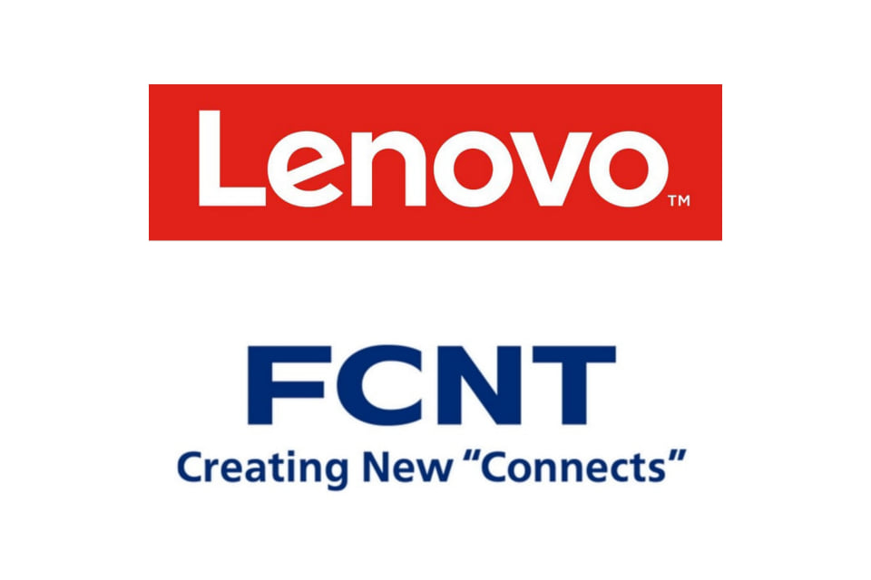
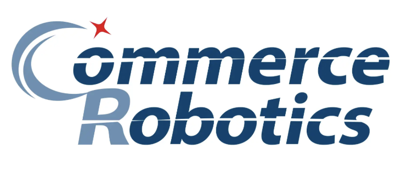
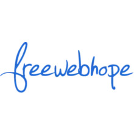

Hello! I'm Danmeng CAI, an AI Engineer at
FCNT (Lenovo Group) in Kanagawa, Japan.
I work with the Motorola global team to create AI-powered features that enhance smartphone experiences
I hold an MS in Informatics (NLP specialization) and an MA in International Area Studies from the University of Tsukuba.
My background spans AI product management, LLM development, and international collaboration, allowing me to connect technical expertise with global perspectives to deliver innovative and user-centered AI solutions.

After joining Lenovo, I have been working on localizing AI features for Motorola smartphones to better suit the Japanese market. I collaborate with cross-functional teams across China, the US, India, and Brazil to adapt AI functionalities, ensuring they meet local user preferences and cultural nuances. I lead the testing team in Japan, providing weekly reports on localization progress and coordinating feedback to enhance feature performance.
See the news about Moto AI

As part of the FCNT team, I joined the Motorola Hackathon 2025 in Xiamen and organized the development of FamLink, a proof-of-concept AI service that connects elderly users’ devices, secure family databases, and conversational AI agents to enable remote wellbeing monitoring. The PoC validated end-to-end data flow, context reasoning, and natural language interaction on an Android prototype.
See our Presentation materials
AI Minutes is designed to securely and accurately generate meeting minutes for various corporate settings. As the Product Manager, I lead our AI and Development teams in integrating advanced technologies into our web application. This includes developing and implementing Speech-to-Text models, Speaker Diarization models, and Large Language Models to enhance transcription accuracy and speaker identification.
Check our Product
I walk through how qualitative expert feedback can be transformed into structured insights using topic modeling, sentiment analysis, and clustering to support biodiversity research. Read More
I compare BERT and LSTM models on accuracy and training time for sentiment analysis, showing where transformer-based approaches shine and where lighter recurrent models still win. Read More
University of Tsukuba, 2022-2024
University of Tsukuba, 2022-2024
University of Tsukuba, 2018-2021
Washington University in St. Louis, 2019-2020
University of Tsukuba, 2014-2018

Years Worked: May 2025 - Current
I lead the Japanese testing team, ensuring that AI features are effectively adapted to local contexts and user needs. I provide weekly progress reports on AI localization to teams in China, the US, and India, enabling alignment across regions. I also work closely with Brazilian and Chinese teams to refine prompts, resulting in more accurate and user-friendly AI outputs.

Years Worked: Oct. 2024 - Apr. 2025
I manage a team of AI engineers in Vietnam and developers in India, collaborating to create innovative AI-driven applications. Additionally, I contribute to the Global Division Department by driving strategies to enhance sales performance in Japan's online shopping marketplaces.

Years Worked: Feb. 2024 - Sep. 2024
I collaborated on the LLM-Creative project, focusing on understanding the company's workflow and exploring improvements to the creative production process using LLMs for more efficient, reproducible outputs. Additionally, I researched how to use LLM tools for generating advertising images through Midjourney and explored video generation methods like Runway Gen-3. I also developed a customized ChatGPT model that generates catchy copywriting from URLs and utilized OpenAI's API in Google Apps Script to automate customer and market data analysis, enhancing workflow efficiency.
Years Worked: July 2024 - Aug. 2024
I focused on network analysis of conspiracy groups on Telegram, creating bipartite networks to explore the interactions between groups and authors. I utilized tools like NetworkX and Gephi to calculate key metrics such as degree centrality, betweenness centrality, and PageRank. I categorized groups based on the number of authors and messages, analyzed shared authors between groups, and developed methods to calculate group closeness.
If you'd like to get in touch, feel free to email me at: caidanmeng@gmail.com